- 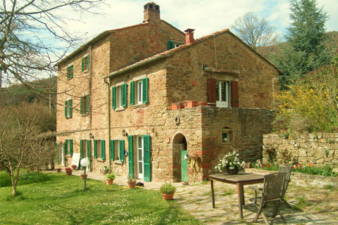
- 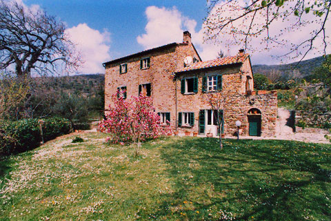
- 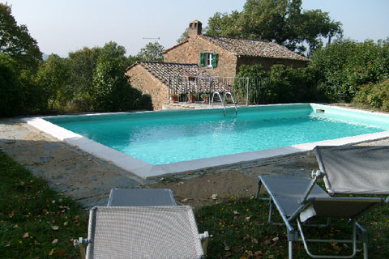
- 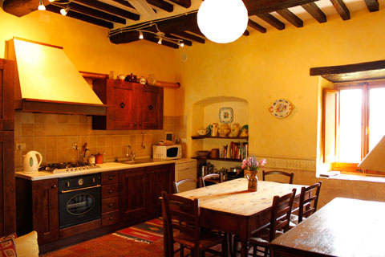
- 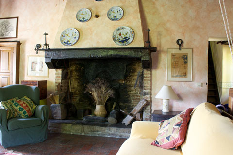
- 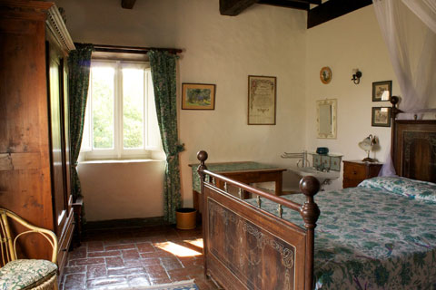
- 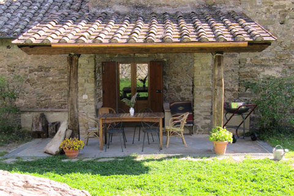
- 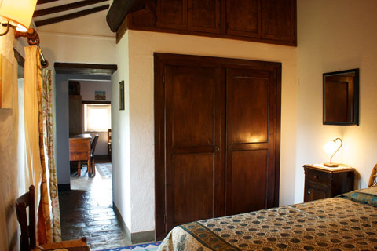
- 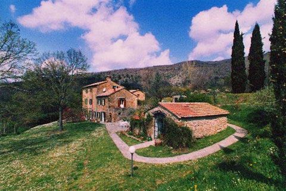
The Old Watermill Farm
Enjoy an authentic Tuscan experience at the Old Watermill, an enchanting cozy villa nestled in the olive groves on a south-facing hillside, perched on the edge of the Apennines.
One of the neighbouring fields was said to be the home of Ulysses tomb, founder of the Etruscans. This beautiful and recently refurbished 17th century mill derives its name from the Medieval tradition of harnessing the natural power of streams and rivers to drive the great granite grindstones used to mill flour.
The façade of this rural heritage structure is made of the local sandstone, 'Pietra Serena' with its soft ochres and greys. It has been lovingly preserved, keeping its rustic charm leaving corners for migrant birds to return to their nests.
The terraced gardens are enclosed with the most beautiful array of flowers, lavender and rosemary as well as numerous Mediterranean plants and aromatic herbs, where idyllic corners await those seeking a contemplative moment. Horses can be found grazing under the nearby olive trees and create an intrinsic balance between man and nature..
Prize winning organic olive oil is produced from our hand picked olives that are pressed in a stone ground cold pressed mill can be purchased directly.
The large swimming pool (33 x 24ft) is located on the top terrace and offers a natural inviting retreat during the long hot summer days. The pool area is furnished with garden furniture.
Special interest holidays
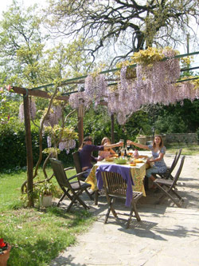There are countless other medieval cities including Montepulciano, Montalcino Pienza, Siena, Assisi, whilst Florence, Gubbio, Arezzo and Sansepolcro are close enough for day trips for those seeking the heart of the Renaissance.
On request and subject to charges, we are pleased to arrange the following activities or services - horse back riding, guided tours of the area and neighbouring towns, day trips out hiking in the Apennines or by the lake, wine tasting, olive oil-tasting and a visit to a traditional olive oil mill, an experienced chef can be booked to prepare a traditional Tuscan meal for you, cooking lessons (subject to numbers), guided tours of the local museums as well as others further a field, special tours with emphasis on the Etruscans.
From Cortona there are excellent opportunities for cultural excursions in both Tuscany and Umbria. We are ready to help you plan your trips and outdoor activities such as olive picking and olive oil tasting, or a cooking course in Tuscan specialities.
Further details
Once part of the Etruscan kingdom of Etruria, this is countryside steeped in mystery.
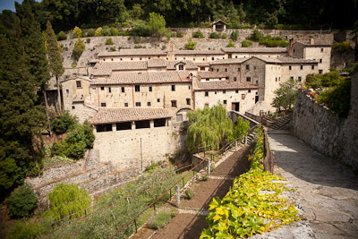The Tuscan Umbrian border area still holds secrets that archaeologists and historians are still unravelling. Due to recent finds Cortona, our nearest town, has become home to the biggest Etruscan museum (the MAEC) outside the Villa Giulia in Rome.
We are close to Lake Trasimeno where Hannibal the infamous Carthaginian general had his famous victory over the Romans in 217 B.C. Today the lake is a delightful place to visit for picnics and boat trips to the Islands.
Just outside Cortona lies one of the most precious medieval monasteries built on the rock cave where Saint Francis sought shelter during his numerous trips past Cortona. The local, supermarket, pizzeria, restaurant, bar and clothes shop are within 10 minutes walk. The closest banks are in Cortona or Camucia a 10 minute drive away.